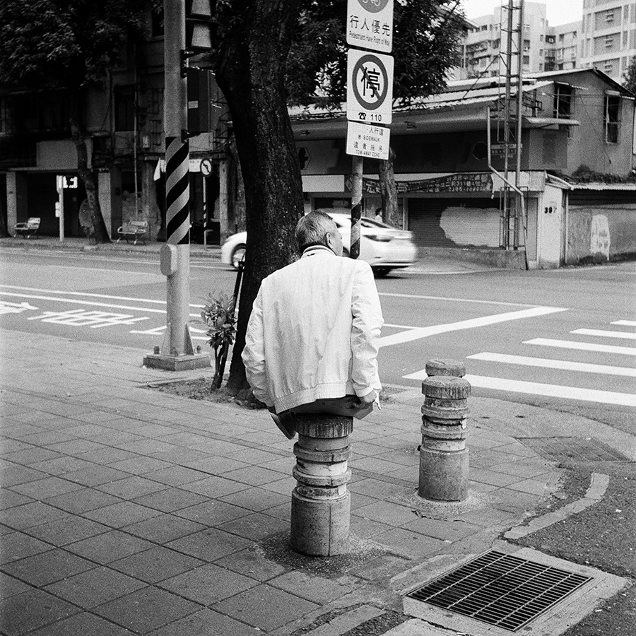

|

|
現實感, 楊伯中
《陽羨書生》(南朝梁吳均《續齊諧記》載 )： 陽羨許彥負鵝籠而行，遇一書生以腳痛求寄籠中。至一樹下書生出從口中吐出器具肴饌，與彥共飲，並吐一女子共坐。書生醉 臥，女子吐一男子。女子醉臥，男子複吐一女子共酌。書生欲覺女子又吐錦帳遮掩書生即入內共眠。男子另吐一女子酌戲。後次第各吞所吐，書生以銅盤一贈彥而去。 Caspar David Friedrich: Wanderer above the Sea of Fog, 1818. René Magritte: The Lovers II, 1928. Not To Be Reproduced, 1937. The Son of Man, 1964. La Décalcomanie, 1966. |